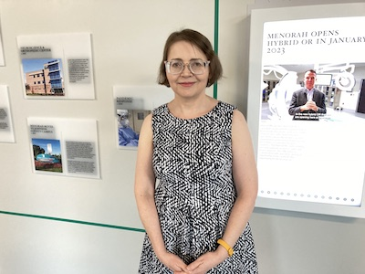
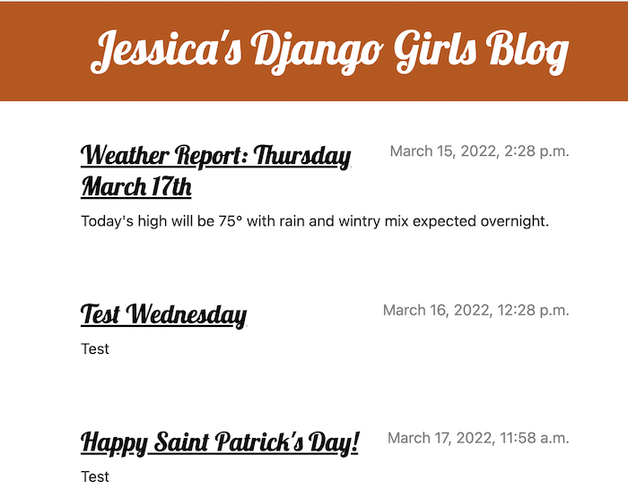
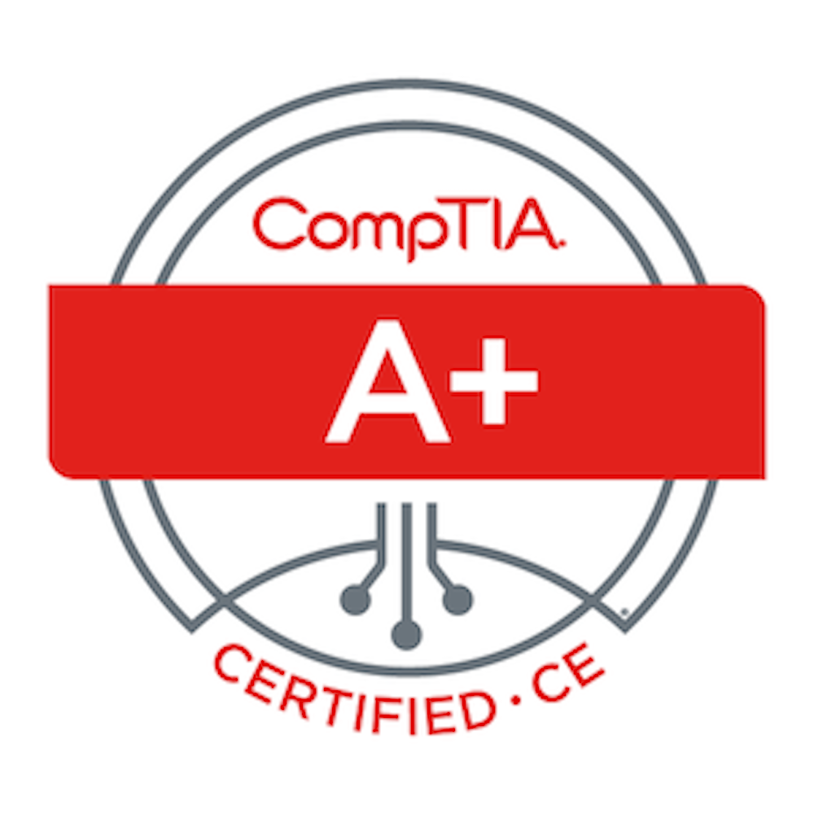
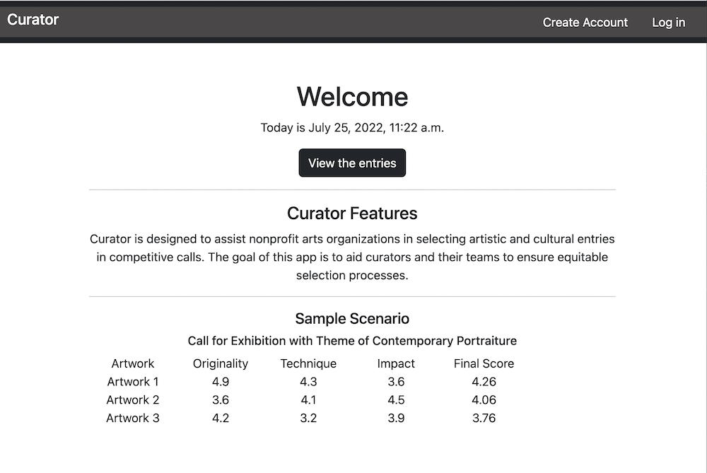

Developer Internship, Dimensional Innovations, 2023

Here I am at the unveling reception for Menorah Medical Center's Legacy Hall! I coded the front end application for these non-touch screens in Vue and Electron, featuring an image slider and API requests from DI's custom-built CMS.
Fine Art Portfolio

I started collecting beads and making textiles when I was eight years
old. I've earned a Masters in Fine Art, and my work has been exhibited
internationally. Check out the site I created for my art!
Development Internship, Trivial, Inc., 2022
During the Development Internship with Trivial I became acclimated to
the Agile environment as part of a professional development team. This
was my first remote startup role. I contributed to a JavaScript action
library to integrate actions into the codebase of a RESTful
application. I used the Postman API platform and Mocha for testing
within our automation product.
DjangoGirls KC Mentor Director, 2019-2022

Django Girls is a yearly event facilitated by Kansas City Women in
Technology. My responsibilities as Mentor Director have included
recruitment of mentors; planning and organization of the event;
placement of mentors and attendees in small groups; and design of
custom swag.
CompTIA A+ Certification, Valid 2021-2024

The CompTIA A+ certification requires that candidates pass two exams
in professional IT troubleshooting for technical support roles.
CompTIA A+ appears in more tech support job listings than any other IT
credential.
Crit Night, an application in Django

A full-stack application I coded in Django to hypothetically accompany the Crit Night events held at plug gallery. The app incorporates user authentication, account creation, CRUD operations, internal messaging and voting on artworks uploaded using the Python Pillow library.